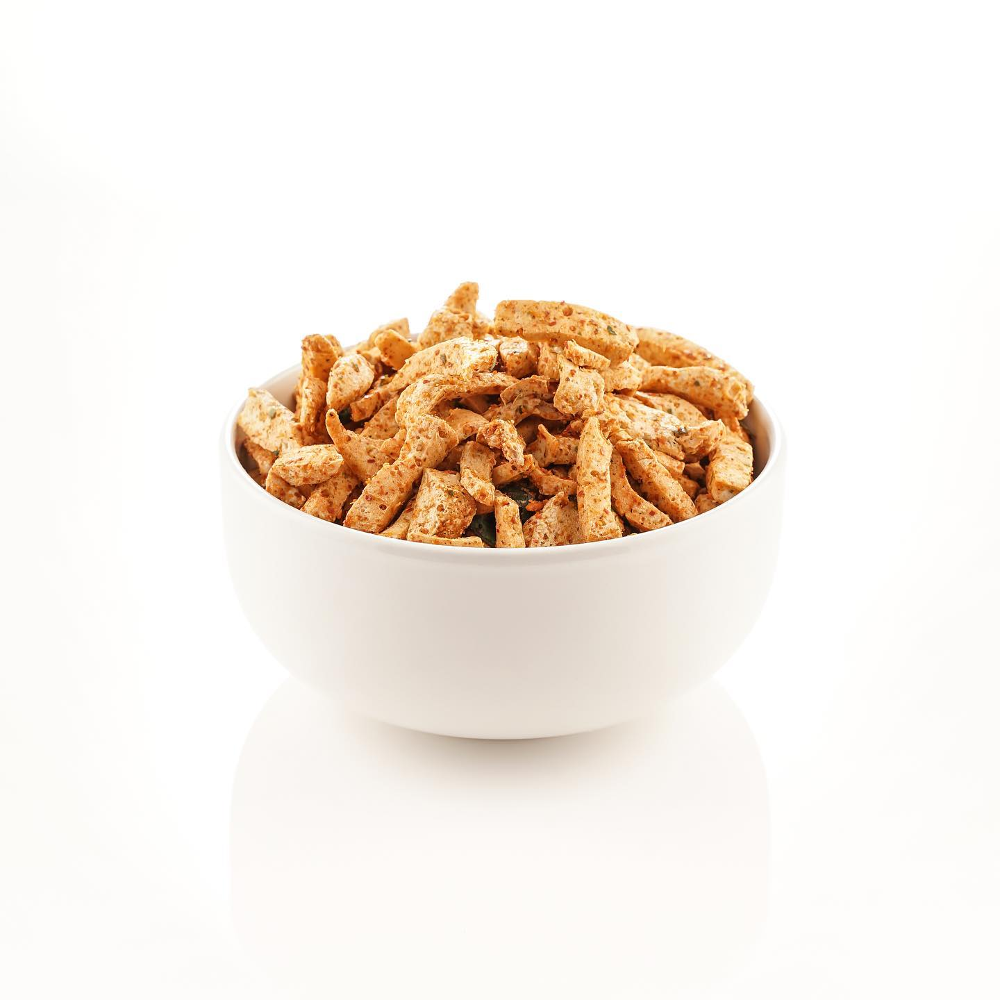
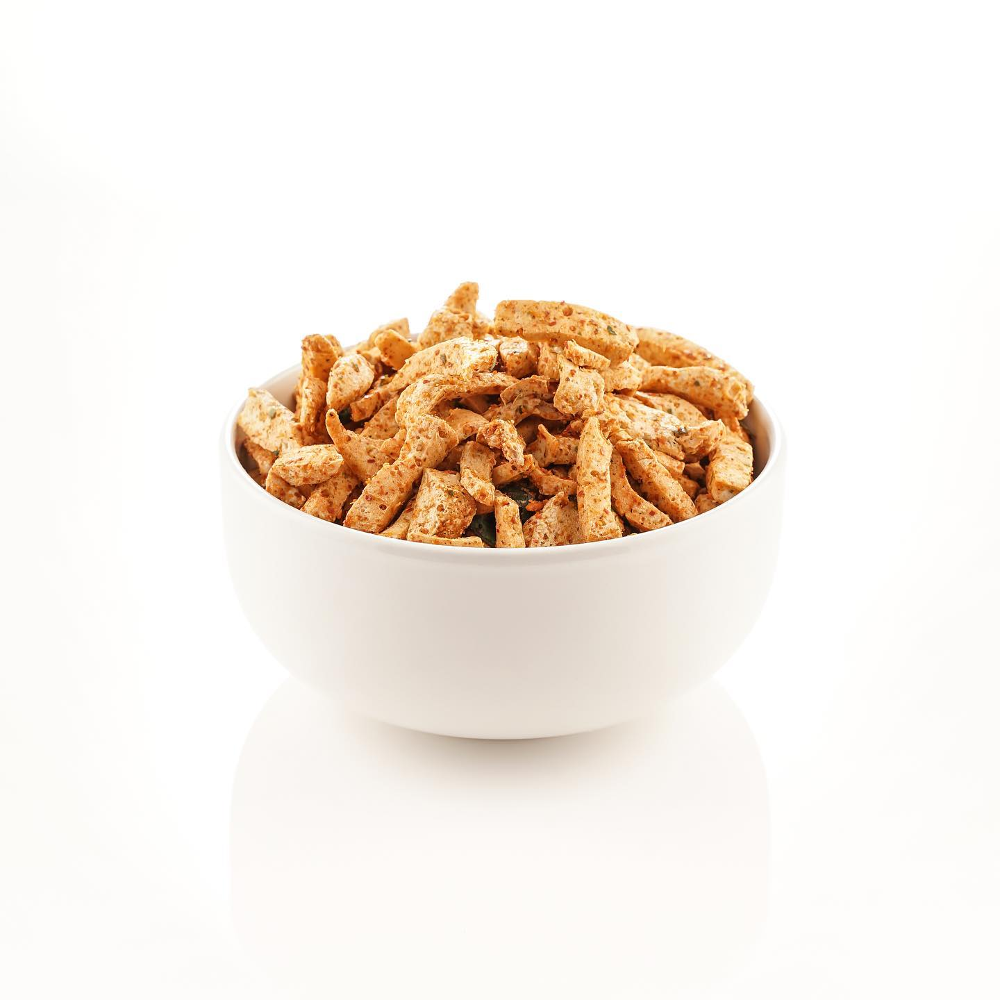

Basreng
 

Basreng pedas adalah camilan dari olahan baso ikan yang digoreng dan diberi bumbu.
Terdapat rasa pedas dan original. Basreng menjadi favorit masyarakat karena rasanya yang enak, gurih, pedas dan renyah.
Basreng menjadi camilan favorit saat ini, camilan asal kota Bandung ini sangat digandrungi oleh masyarakat.
Komposisi:
-
- Baso ikan
- Minyak goreng
- Penyedap rasa
- Bubuk cabai
- Daun jeruk
Cara Pembuatan:
-
1. Potong baso ikan dengan memanjang
2. Panaskan minyak goreng
3. Goreng baso ikan sampai kering
4. Setelah matang, angkat dan tiriskan basreng
5. Beri penyedap rasa, bubuk cabai, dan daun jeruk yang sudah digoreng
6. Campurkan dan aduk rata
7. Basreng siap disajikan